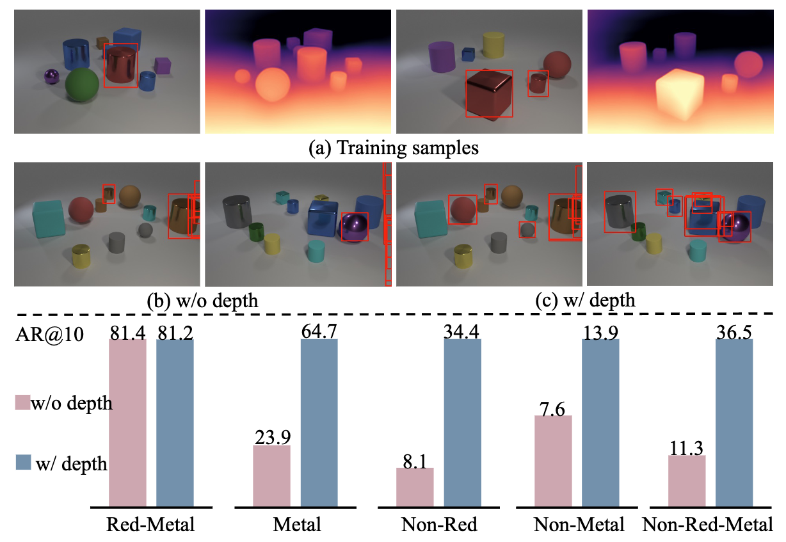

Qualitative Results
The model is trained on the COCO2017 with 20 VOC classes.
Top-10 predictions are shown in each image.

On the CLEVR dataset, we train the model using the red-metal class, designated as the known class. We then evaluate its performance on novel classes with disjoint attributes. This toy example illustrates that incorporating colorized depth images into the training set enhances the model's generalization ability, enabling it to better detect novel objects.

Our learning framework consists of two branches, the natural image branch (top) and the transformed image branch (bottom). Both branches adopt transformers to make predictions, which are then matched with the object proposals to obtain optimized object queries. We compute a matching loss \( L_{\text{match}} \) which enforces the matched object-oriented query pairs from the two branches to be similar. We finally compute the ordinary segmentation loss \( L_{\text{gt}} \) using the ground truth labels. The transformer in the natural image branch is updated as an EMA model of the transformed image branch. In our method, we utilize the unsupervised pretrained CutLER to provide the general object proposals, which ensures no potential information leakage in our method.


@inproceedings{zhang2024vclr,
title={v-CLR: Learning Appearance-Invariant Representation for Open-World Instance Segmentation},
author={Zhang, Chang-Bin and Ni, Jinhong and Zhong, Yujie and Han, Kai},
booktitle={Proceedings of the IEEE/CVF Conference on Computer Vision and Pattern Recognition},
year={2025}
}